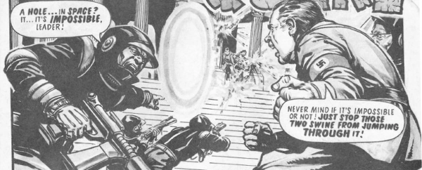

Time Cops: they stop time quakes from discombobulating the future.
Art by Magallanes Salinas
| Story Title | Parts | Pages | w indicates a wraparound coverCovers | Year(s) | Issues | Writer | Artist | Colourist | Letterer |
|---|---|---|---|---|---|---|---|---|---|
| [The Droon] | 3 | 18 | 2: Brian Bolland 1 | 1978 | SL1-3 | Chris Lowder | Ian Kennedy: 1, 3 John Cooper: 2 various | <-- 5pp, [b&w] | Peter Knight: 1‑2 Tony Jacob: 3 various |
| [Nazi World] | 6 | 34.5 | 8: Brian Lewis 1 | 1978 | SL4-9 | Chris Lowder | Magallanes Salinas | <-- 5pp, [b&w] | Jack Potter: 1‑2 Peter Knight: 3‑6 various |
| [Aztec Ascendance] | 4 | 28 | 0 | 1978 | SL10-13 | I. Mennell | Magallanes Salinas | <-- 7pp, [b&w] | Peter Knight: 1, 3 Steve Potter: 2 Paul Bensburg: 4 various |
| [White Falls] | 1 | 8 | 0 | 1979 | SLA'80 | unknown | unknown | <-- | unknown |
| [Mother Eternal] | 4 | 12 | 0 | 1980 | 148-151 | Chris Lowder | Jesus Redondo | [b&w] | John Aldrich |
| [Eve of Destruction] | 1 | 8 | 0 | 1980 | SLA'81 | unknown | unknown | [b&w] | unknown |
From El MestizoDemon With a Six-Gun | 1 | 5 | 0 | 2023 | 2350 | Chris Weston | Chris Weston | <-- | Simon Bowland |
| >> Floating Covers << | |||||||||
| Earth Star-Squad Hit by Droon: No Survivors | ~ | ~ | 1 | 1978 | SL15 | n/a | Alberto Salinas | <-- | n/a |
| year | episodes | pages |
| 1977 | 0 | 0 |
| 1978 | 13 | 80.5 |
| 1979 | 1 | 8 |
| 1980 | 5 | 20 |
| 1981 | 0 | 0 |
| 1982 | 0 | 0 |
| 1983 | 0 | 0 |
| 1984 | 0 | 0 |
| 1985 | 0 | 0 |
| 1986 | 0 | 0 |
| 1987 | 0 | 0 |
| 1988 | 0 | 0 |
| 1989 | 0 | 0 |
| 1990 | 0 | 0 |
| 1991 | 0 | 0 |
| 1992 | 0 | 0 |
| 1993 | 0 | 0 |
| 1994 | 0 | 0 |
| 1995 | 0 | 0 |
| 1996 | 0 | 0 |
| 1997 | 0 | 0 |
Comic strip data (excludes other content):